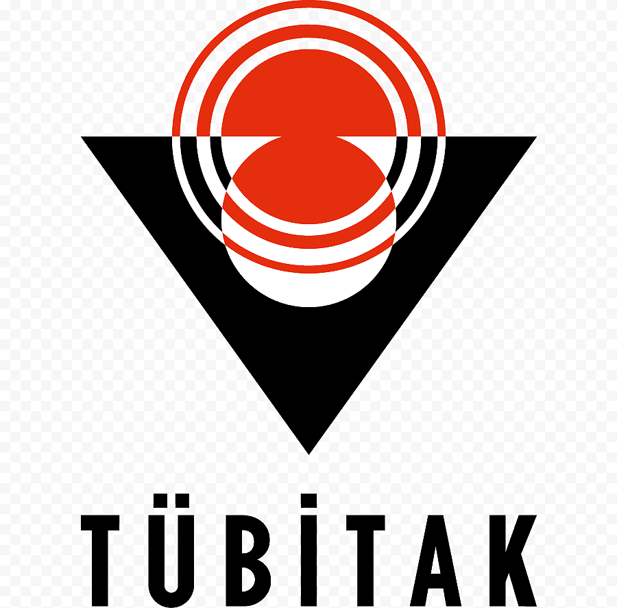

İhracat Teşviklerinin Dış Ticaret Girişimciliği Perspektifiyle Revize Edilmesine Yönelik Politika Önerileri
TR42 Doğu Marmara Bölgesi'ndeki ihracatçı firmaların katılımıyla yürütülen kapsamlı bir saha araştırmasının bulguları, somut politika önerilerine dönüşüyor.
Politika Önerilerini Gör >